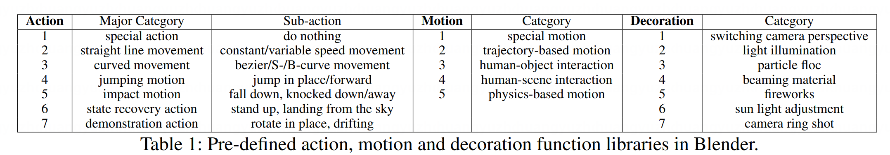
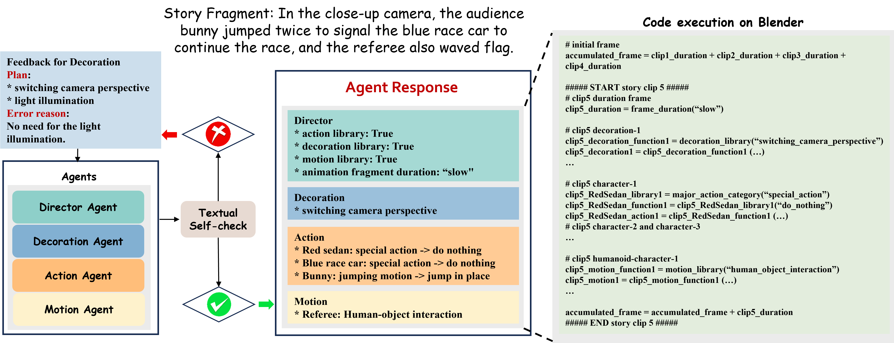

# Work done during the internship at ARC
✉ Corresponding Authors
Visualization of Story3D-Agent
Story3D-Agent is an innovative LLM-agents system designed for 3D storytelling visualization.
The primary objective of the LLM-agents system is to adeptly transform a provided narrative into a corresponding 3D visualization.
In the video below, we illustrate the narrative titled Race Day, represented as a 3D-rendered representation.
Traditional visual storytelling is complex, requiring specialized knowledge and substantial resources, yet often constrained by human creativity and creation precision.
While Large Language Models (LLMs) enhance visual storytelling, current approaches often limit themselves to 2D visuals or oversimplify stories through motion synthesis and behavioral simulation, failing to create comprehensive, multi-dimensional narratives.
To this end, we present Story3D-Agent, a pioneering approach that leverages the capabilities of LLMs to transform provided narratives into 3D-rendered visualizations.
By integrating procedural modeling, our approach enables precise control over multi-character actions and motions, as well as diverse decorative elements, ensuring the long-range and dynamic 3D representation.
Furthermore, our method supports narrative extension through logical reasoning, ensuring that generated content remains consistent with existing conditions.
We have thoroughly evaluated our Story3D-Agent to validate its effectiveness, offering a basic framework to advance 3D story representation.
Pre-defined Python function platform of 3D storytelling visualization

We believe that effective visual story creation necessitates maintaining long-term narrative coherence and dynamic visualization consistency in 3D format.
Simultaneously, to facilitate superior visual effects and enhance diversity and creativity, we have incorporated numerous requisite components including:
(1) diverse actions for 3D characters (e.g, curved turning by car).
(2) human motions for humanoid characters (e.g, person walking).
(3) various decorative elements for visual effects (e.g, camera perspective switching and environment lighting changes).
We demonstrate them here.
Story3D-Agent Framework
Overviews of proposed (a) Story3D-Agent and (b) Visual Self-check workflow.
Our method involves dividing a story into multiple parts, each serving as an event window.
Using LLMs, we independently determine the corresponding storyline for each clip.
These determinations are then compiled for the overall story model.
Further, the accuracy of the system's determinations is improved by a multi-dimensional error correction mechanism.
Textual Self-check mechanism of Story3D-Agent

The director, action, motion, and decoration agents are required to initially produce their respective outputs.
Subsequently, these outputs are evaluated by the textual self-check mechanism.
This mechanism not only confirms the correct responses but also initiates self-reflection and correction for potential errors.
The process continues until all outputs are deemed error-free, at which point the determination process within the current event window is concluded.
More result of Story3D-Agent
We depict another vivid narrative titled Friendship provided by our Story3D-Agent, which narrates the story about
the univeral theme of friendship in a pre-defined in garden-like scene.
Story continuation of Story3D-Agent
We present the story continuation outcomes generated by our Story3D-Agent.
Leveraging the rigorous logical reasoning capabilities of LLMs, the newly generated narratives could:
(1) Preserve the coherence and consistency of the contextual story content.
(2) Align with the stipulated conditions for the new narrative.
(3) Implement all generated plots without introducing any misleading elements.
The continuation result for the narrative Race Day is provided for illustration.
The continuation result for the narrative Friendship is provided for illustration.